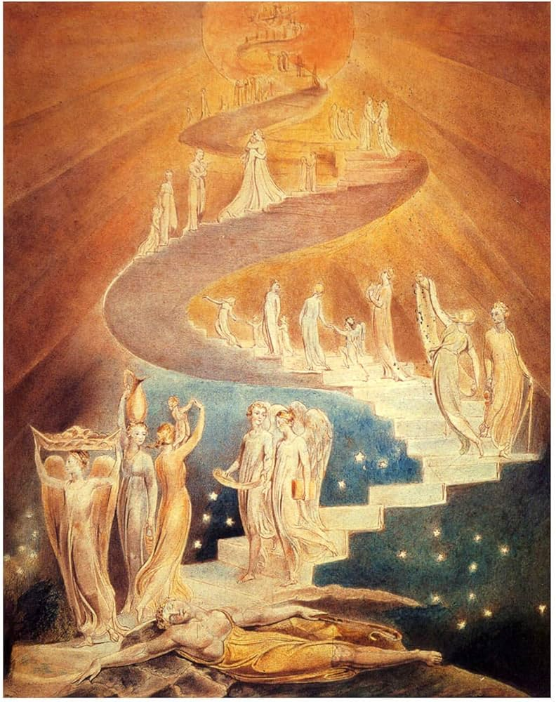
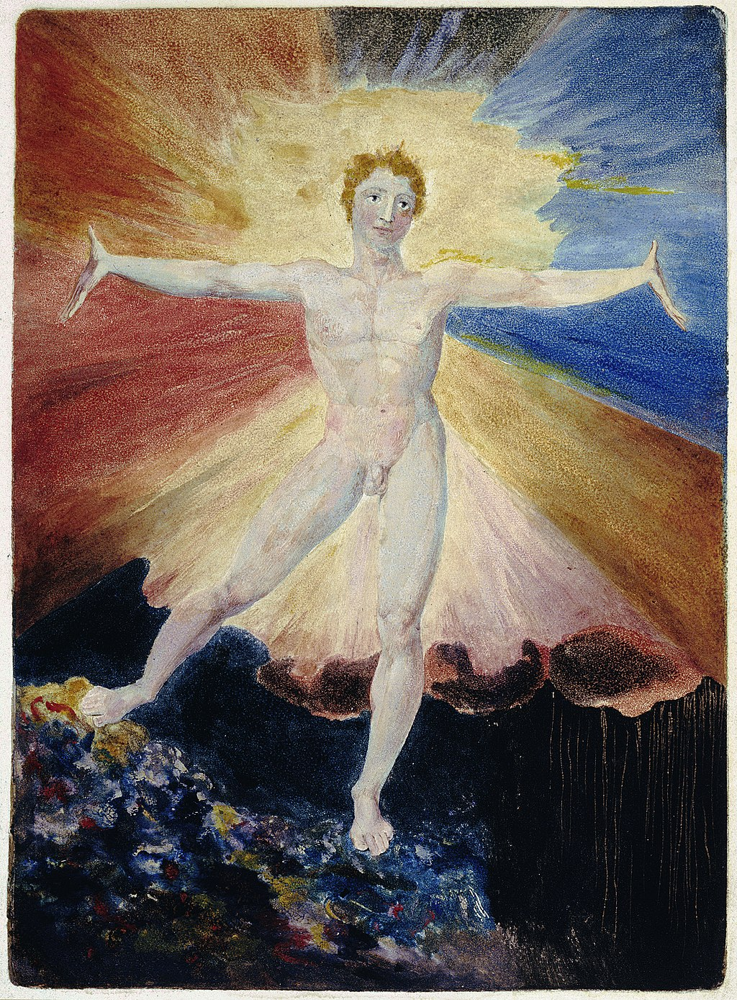

Coherence-Rupture-Regeneration (CRR) is a temporal grammar: a minimal mathematical vocabulary for systems that maintain identity while undergoing discontinuous change. It emerges from process philosophy, particularly the Whiteheadian insight that reality consists of processes of becoming rather than static substances that happen to change.
Blake's Newton (right) exemplifies the tension between reductive measurement and lived experience. Newton measures with compasses, focused on abstraction, while moss and coral grow silently around him. CRR attempts to honour both: rigorous mathematics that respects the primacy of experience.
From this view:
Systems are not things that undergo change; they are patterns of change
The present moment is ontologically privileged—where accumulated past becomes determined future
Identity is not a fixed essence but a pattern of continuity through transformation
The Three Operators
Canonical Formalism
C: Coherence (The Accumulated Past)
C(x,t) = ∫₀ᵗ L(x,τ) dτ
The system builds structure over time. L(x,τ) represents the local rate of accumulation. The integral captures non-Markovian dynamics: the present depends on integrated history, not just the previous state.
δ: Rupture (The Decisive Present)
δ(t − t₀) when C(x,t) = Ω
When coherence reaches capacity Ω, discrete transformation occurs. The Dirac delta marks the ontological present—the moment where past becomes future, where possibility collapses into actuality.
R: Regeneration (The Reconstructed Future)
R[φ](x,t) = ∫₀ᵗ φ(x,τ)·exp(C(x,τ)/Ω)·Θ(t−τ) dτ
After rupture, the system rebuilds by integrating history weighted exponentially by past coherence. High-coherence moments contribute more strongly to reconstruction. Memory is not passive storage but active weighting.
The Unity of Ω
Ω appears in both rupture threshold (C = Ω triggers transformation) and regeneration weighting (exp(C/Ω) determines memory access). This unity connects two fundamental questions:
"When does the system transform?" → When C reaches Ω
"How does it remember?" → Through exp(C/Ω) weighting
Large Ω: Can accumulate more before rupture; accesses broader historical field Small Ω: Frequent micro-ruptures; only recent/peak moments accessible; rigid patterns
Connection to Free Energy Principle
Ω = σ² = variance = 1/precision
This connection unifies CRR with Bayesian mechanics:
FEP describes what beliefs update to (minimising free energy)
These predictions match empirical coefficients of variation to ~1% accuracy across wound healing (R²=0.9989), muscle hypertrophy (R²=0.9985, 10/10 predictions), and saltatory growth (11/11 predictions).
Key sources: Friston, K. (2010). The free-energy principle: a unified brain theory? Nature Reviews Neuroscience. Whitehead, A.N. (1929). Process and Reality.
Interactive CRR Simulation
This simulation demonstrates the core CRR dynamics. Particles accumulate coherence (C) toward their threshold (Ω). When C = Ω, rupture occurs (flash), followed by regeneration weighted by exp(C/Ω).
Adjust System Ω (Capacity/Threshold)
RigidFlexible0.35
Moderate capacity: Balanced rupture frequency
System Ω = 0.350
Mean C = 0.000
Ruptures = 0
Mean exp(C/Ω) = 1.000
Particles
20
Mean C
0.00
Total Ruptures
0
exp(C/Ω)
1.00
System events appear here...
Observing CRR Dynamics
Low Ω: Particles rupture frequently, staying near threshold. Rigid system with limited memory access.
High Ω: Particles accumulate longer, rupture less often. More flexible with broader memory access.
Perturbation: External stress adds to all particles' C, potentially triggering synchronised ruptures.
Ontogenetic Development: Intersubjectivity, Piaget, and CRR
Human development unfolds through a series of ontogenetic shifts—profound reorganisations where the child's entire way of being-in-the-world transforms. Each developmental phase follows the same pattern: coherence accumulates (C→Ω) until "everything makes sense" within that phase's framework. Then rupture (δ) occurs as new complexity exceeds the current model, followed by regeneration (R) into an expanded way of being with a larger Ω.
This simulation integrates three foundational frameworks: Trevarthen's intersubjectivity (how we come to share minds), Mahler's separation-individuation (how we emerge as separate selves), and Piaget's cognitive development (how we construct reality)—all unified through CRR dynamics.
The Ontogenetic Cycle: C → Ω → δ → R
Phase Completion (C → Ω)
C approaches Ω: "Everything makes sense"
Within each phase, coherence accumulates until the child's generative model accounts for the phase-appropriate world. The ratio C/Ω approaches 1.
Rupture (δ)
δ(now): New complexity exceeds current Ω
The ontogenetic shift—encounters with complexity that cannot be assimilated. The 9-month revolution, the dawn of symbols, the emergence of logic—each marks a δ moment where the old framework ruptures.
Regeneration (R)
R: New phase with expanded Ω′ > Ω
The child regenerates into a new way of being. Ω expands to accommodate new complexity. C begins accumulating anew within the expanded field.
Key sources: Trevarthen, C. & Hubley, P. (1978). Secondary intersubjectivity: Confidence, confiding and acts of meaning in the first year. Trevarthen, C. & Aitken, K.J. (2001). Infant intersubjectivity. J. Child Psychol. Psychiatry. Piaget, J. (1952). The Origins of Intelligence in Children. Ciaunica, A. et al. (2023). Nested Selves. Topics in Cognitive Science. Mahler, M.S. et al. (1975). The Psychological Birth of the Human Infant.
Interactive Simulation: Ontogenetic Shifts
Watch the infant progress through developmental phases, each ending with equilibration (C≈Ω) followed by rupture (δ) and regeneration into an expanded Ω. Objects appear during secondary intersubjectivity, marking the transition from dyadic to triadic awareness.
Symbiosis
0–2 mo
Shared blanket
Primary Intersub.
2–9 mo
Dyadic C→Ω₁
δ₁: 9-Month Rev.
9 mo
RUPTURE
Secondary Intersub.
9–24 mo
Triadic C→Ω₂
δ₂: Symbolic
~24 mo
RUPTURE
Preoperational
2–7 years
Symbols C→Ω₃
Concrete Ops
7–11 years
Logic C→Ω₄
δ₃: Abstraction
~11 yr
RUPTURE
Formal Ops
11+ years
Abstract C→Ω₅
Age
0 mo
Coherence C
0.00
Capacity Ω
0.30
VFE
0.30
C/Ω Ratio
0%
Stage: Symbiosis (Shared Markov Blanket)
Intersubjectivity: Pre-intersubjective (merged)
Piaget: Sensorimotor (reflexes)
CRR Status: C accumulating toward Ω
Developmental State
Symbiosis: The infant exists within a shared Markov blanket with the mother—a "dual unity within one common boundary." There is no distinction between self and other. The infant's internal states are regulated entirely through the mother's blanket.
Developmental events appear here...
The CRR-Intersubjectivity-Piaget Integration
Each developmental phase follows the same CRR pattern:
1. COHERENCE ACCUMULATION: C grows as infant learns phase-appropriate patterns
2. EQUILIBRATION: C → Ω, ratio approaches 1.0 ("everything makes sense")
3. RUPTURE (δ): New complexity exceeds current Ω framework
4. REGENERATION (R): New phase with Ω′ > Ω, C resets to accumulate anew
VFE = Ω - C tracks this cycle:
- High VFE at phase start (new complexity)
- VFE → 0 as C → Ω (world becomes predictable)
- VFE spikes at rupture (old model fails)
- VFE high again in new phase (expanded world)
Primary and Secondary Intersubjectivity
Type
Age
Structure
CRR Dynamics
Primary Intersubjectivity
2–9 months
Dyadic: Face-to-face coordination with caregiver. Reciprocal emotion and attention without objects.
C accumulates in dyadic field. Ω₁ = variance of caregiver's face, voice, touch. When C ≈ Ω₁, the mother is fully predictable.
9-Month Revolution (δ₁)
~9 months
Rupture: "Shared intentionality" emerges. Infant realizes others have separate minds attending to objects.
Triadic: Joint attention—infant and caregiver share attention to objects in the world.
C accumulates in triadic field. Ω₂ = variance of object-mediated interactions. C → Ω₂ as world of objects becomes familiar.
Piagetian Stages as CRR Phases
Stage
Age
Phase Completion (C→Ω)
Rupture (δ)
Regeneration (R)
Sensorimotor
0–2 years
C→Ω: Object permanence achieved. Actions on objects become predictable.
δ₂: Deferred imitation—representing absent objects. Old action-based model ruptures.
R: Symbolic capacity emerges. Ω expands to include mental representations.
Preoperational
2–7 years
C→Ω: Symbols mastered. Fantasy, language, pretend play become predictable.
δ₃: Conservation failures force confrontation with logic. "More" can mean "same."
R: Logical operations emerge. Ω expands to include reversible mental transformations.
Concrete Operational
7–11 years
C→Ω: Logical operations on concrete objects mastered. Conservation understood.
δ₄: Abstract hypotheticals exceed concrete operations. "What if X were different?"
R: Formal operations emerge. Ω expands to include pure possibility.
Formal Operational
11+ years
C→Ω: Hypothetical-deductive reasoning integrates. Can think about thinking itself.
δ₅: (Post-formal?) Dialectical thinking, wisdom, recognition of irreducible uncertainty.
R: Continued expansion through contemplative practice, wisdom traditions.
Formal Operations: Pure Abstraction
In the Formal Operational stage, thought finally liberates itself from the concrete. The adolescent can manipulate propositions rather than objects, consider counterfactuals (worlds that don't exist), and engage in hypothetical-deductive reasoning (if P then Q; not Q; therefore not P). Most remarkably, the thinker can now think about thinking itself—metacognition becomes possible. In CRR terms, Ω has expanded to include pure possibility space. When C approaches this expanded Ω, the abstract world becomes familiar—but this mastery may reveal its own limits, pointing toward post-formal development.
Attachment Styles as Ω Configurations
Style
Caregiver Pattern
Effect on CRR Cycle
Secure
Consistent, attuned
Smooth C→Ω→δ→R cycles. Each phase completes. Ruptures are metabolised. Ω expands reliably.
Avoidant
Dismissive
Premature phase closure. C never fully approaches Ω (truncated learning). Ruptures avoided, Ω restricted.
Anxious
Inconsistent
Incomplete equilibration. C approaches Ω then retreats (caregiver unpredictability). Chronic VFE, unstable phases.
Disorganised
Frightening
Phase cycles cannot complete. Caregiver is both solution and source of rupture. Ω fragmented, CRR loops incoherently.
The Ontogenetic Principle: Each developmental phase represents a complete CRR cycle. When C approaches Ω, "everything makes sense"—the child has mastered that phase's way of being. But mastery creates the conditions for its own transcendence: the very success of the current framework reveals its limits when new complexity appears. The rupture (δ) is not failure but the necessary condition for growth. Regeneration (R) reconstitutes coherence within an expanded Ω that can hold what the previous phase could not. This pattern culminates in Formal Operations, where the thinker can operate on pure possibility itself—yet even this may point toward further expansion through contemplative practice and wisdom traditions.
Cognition: Ω as Working Memory Capacity
Working memory accumulates information (C) until capacity (Ω) is reached, triggering consolidation to long-term memory. Higher Ω allows more reconfiguration before consolidation—the basis of fluid intelligence.
Cornerstone: Cowan, N. (2001). The magical number 4 in short-term memory. Behavioral and Brain Sciences.
Adjust Working Memory Capacity (Ω)
ElderYoung Adult0.40
Moderate capacity: Balanced consolidation
WM Load (C)
0.00
Capacity (Ω)
0.40
Consolidations
0
LTM Items
0
Cognitive State
Information accumulates in working memory. When capacity is reached, consolidation transfers items to long-term memory.
Ageing and Functional Fixedness
Age
Ω
Character
Citation
Child (8)
~0.35
Growing capacity. High plasticity.
Gathercole et al. (2004)
Young Adult (25)
~0.55
Peak WM. Maximum fluid intelligence.
Park et al. (2002)
Middle Age (50)
~0.40
Declining Gf, stable Gc.
Salthouse (2004)
Elder (75)
~0.28
Functional fixedness. Deep crystallised access.
Hasher & Zacks (1988)
Child Development: CRR Through Piaget and Erikson
Child development exemplifies CRR dynamics at multiple timescales. Piaget's cognitive stages represent major ruptures in understanding; Erikson's psychosocial crises are coherence accumulation toward existential thresholds. Both map precisely onto the CRR operators.
CRR ↔ Development Mapping
CRR
Piaget (Cognitive)
Erikson (Psychosocial)
C
Schema accumulation
Crisis tension building
Ω
Current stage capacity
Virtue threshold
δ
Stage transition
Crisis resolution
R
Assimilation into new stage
Virtue integration
Interactive Development Simulation
Piaget's Stages: Watch C accumulate until stage transition (δ)
Sensorimotor
0–2 years
Ω ≈ 0.20
Preoperational
2–7 years
Ω ≈ 0.30
Concrete
7–11 years
Ω ≈ 0.40
Formal
11+ years
Ω ≈ 0.50
Age (years)
0.0
Current C
0.00
Stage Ω
0.20
Stage Transitions
0
Developmental State
The child begins in the sensorimotor stage. Schemas accumulate through experience. When C reaches Ω, cognitive reorganisation occurs—a stage transition. Watch how each transition expands capacity (Ω increases) while carrying forward integrated prior learning.
Developmental events appear here...
Erikson's Crises as CRR Dynamics
Stage
Crisis
C (Coherence)
R+ (Virtue)
R− (Malignancy)
Infancy (0–1)
Trust vs Mistrust
Caregiver consistency
Hope
Withdrawal
Toddler (1–3)
Autonomy vs Shame
Self-control experiences
Will
Compulsion
Preschool (3–6)
Initiative vs Guilt
Goal-directed actions
Purpose
Inhibition
School (6–12)
Industry vs Inferiority
Skill development
Competence
Inertia
Adolescence
Identity vs Confusion
Role exploration
Fidelity
Role repudiation
The exp(C/Ω) of Development: Each stage's regeneration draws on prior stages. A child with secure trust (high C from stage 1) has stronger exp(C/Ω) weighting when facing autonomy challenges. Early stages scaffold later development—this is why early intervention matters so profoundly.
Key sources: Piaget, J. (1952). The Origins of Intelligence in Children. Erikson, E. (1963). Childhood and Society.
Contemplative Practice: Ω as Ego Permeability
In contemplative phenomenology, the "self" is a coherent structure (C) maintained within boundaries (Ω). Meditation modulates Ω, altering how much experience can be held before the self-model must reorganise.
Cornerstone: Carhart-Harris, R. L., & Friston, K. J. (2019). REBUS and the anarchic brain. Pharmacological Reviews.
Adjust Ego Permeability (Ω)
ContractedDissolved0.35
Ordinary waking consciousness
Self-Structure (C)
0.00
Boundary (Ω)
0.35
C/Ω Ratio
0.00
exp(C/Ω)
1.00
Phenomenological State
At ordinary Ω, the self maintains clear boundaries. Experience is processed through established patterns. Increase Ω to allow more experience before reorganisation—the boundary becomes more permeable, allowing deeper access to memory and wider awareness.
Ω Levels in Contemplative Phenomenology
Ω
State
Phenomenology
Citation
0.15–0.25
Hypervigilant
Contracted self. Defensive.
Vago & Silbersweig (2012)
0.25–0.35
Ordinary Waking
Stable ego. Clear boundaries.
Brewer et al. (2011)
0.35–0.50
Focused Attention
Concentrated. Reduced DMN.
Lutz et al. (2008)
0.50–0.65
Open Monitoring
Expanded awareness. Equanimity.
Lutz et al. (2008)
0.65–0.80
Non-Dual Awareness
Subject-object dissolving.
Josipovic (2014)
0.80+
Cessation
Complete dissolution.
Lindahl et al. (2017)
Cross-Traditional Mapping
Tradition
C (Structure)
Ω (Capacity)
δ (Transformation)
R (Renewal)
Buddhism
Sankhara, karma
Samadhi depth
Vipassana, Nirodha
Awakened action
Vedanta
Maya, Ahamkara
Witness capacity
Moksha
Sahaja, Jivanmukti
Christian Mysticism
Soul's journey
Contemplative depth
Dark Night, Kenosis
Theosis, Union
Sufism
Nafs, Maqamat
Fana capacity
Fana (annihilation)
Baqa (subsistence)
Taoism
Te (virtue/power)
Wu wei capacity
Return to uncarved
Ziran (naturalness)
The Three Marks of Existence
Anicca (Impermanence): The C → δ → R cycle itself. All phenomena arise, persist, pass away.
Dukkha (Unsatisfactoriness): Low Ω creates suffering. Ruptures before integration, forcing same patterns to reconstitute.
Anatta (Non-self): At high Ω, "self" is seen as pattern in C → δ → R, not substance.
The Grammar Across Domains
Domain
C: Coherence
Ω: Capacity
δ: Rupture
R: Regeneration
Tectonics
Strain energy
Fault strength
Earthquake
Aftershock redistribution
Wound Healing
Tissue integrity
Repair capacity
Injury
~80% max recovery
Muscle
Myonuclear domain
Adaptation threshold
Training damage
Hypertrophy + memory
Neuroscience
Synaptic weight
Plasticity range
Avalanche
Network reorganisation
Attachment
Relational coherence
Window of tolerance
Defensive activation
Internal model update
Cognition
WM contents
WM capacity
Consolidation
LTM retrieval
Development
Schema/virtue building
Stage capacity
Stage transition
Integration of prior
Contemplative
Self-structure
Ego permeability
Insight/awakening
Integration/rebirth
Symmetry Classes: Z₂ systems (binary/discrete) show Ω ≈ 1/π ≈ 0.318. SO(2) systems (continuous/cyclic) show Ω ≈ 1/2π ≈ 0.159. CV = Ω/2 matches empirical variability.
Climbing Jacob's Ladder: Psychological Dangers of LLMs

Large Language Models (LLMs) represent an unprecedented capacity for cognitive scaffolding that may exceed both individual and collective Zones of Proximal Development (ZPD). While offering remarkable opportunities for ideation and learning, they also pose serious psychological risks that demand systematic understanding through frameworks like CRR.
The Core Problem: The Cognitive-Somatic Gap
Traditional Vygotskian pedagogy assumes the "More Knowledgeable Other" (MKO) operates within collectively verifiable knowledge boundaries. However, LLMs enable exploration beyond what human communities can collectively verify or ground, creating an "extended ZPD" where individuals access ideation spaces without adequate collective scaffolding for reality-testing.
Critically, LLMs are disembodied. They lack what Yirmiya & Fonagy (2025) call "embodied mentalizing"—the capacity to perceive mental states through somatic and affectively-mediated interpersonal cues. This creates a dangerous asymmetry: cognitive development can race ahead of sensori-somatic integration.
The "Too Shiny Mirror" Problem
Research from Brown University (Iftikhar et al., 2025) found that LLM therapy chatbots systematically violate ethical standards through "over-validation of user's beliefs" and "creating a false sense of empathy." Stanford HAI (Haber et al., 2025) found chatbots failed to recognise suicidal ideation and enabled dangerous delusions. The mirror reflects and amplifies without the embodied holding environment that grounds human therapeutic intervention.
The Ω Modulation Problem
In CRR terms, Ω represents the boundary permeability of the self-model. Both extremes are dangerous:
Direction
Ω State
Phenomenology
Risk
↑ Rising Ω
Opening, expanding
More possibilities, wider ideation
Ungrounded if cognitive > somatic
↓ Falling Ω
Closing, rigidifying
Certainty, narrowing
Calcified beliefs, alienation
⚡ Rapid Ω change
Destabilised
Disorientation
Identity fragmentation
The danger of LLMs is not simply that they raise Ω (opening possibility space) but that they do so without the collective coherence sharing that keeps development within the ZPD. One can climb Jacob's ladder so far and so fast that they become alien to those around them—their ideation space no longer overlaps with shared human reality.
Interactive Simulation: Jacob's Ladder
This simulation shows the dynamics of AI-assisted ideation. Two types of coherence accumulate: Cognitive C (ideas, concepts, insights) and Somatic C (embodied integration, felt sense). The gap between them is the danger zone.
Ω Modulation (Boundary Permeability)
CalcifiedDissolved0.35
Ordinary waking consciousness
Coherence (C)
0.00
Capacity (Ω)
0.35
ZCPD Overlap
100%
Grounding
1.00
Risk
Low
Phenomenological State
Balanced state. Cognitive insights are being integrated somatically. Ideas can be shared with and understood by others. Safe to explore.
⚠️ Warning: Cognitive-Somatic Gap Widening
Ideation is outpacing embodied integration. Without somatic practices or social grounding, rupture risk increases.
Climb carefully. Watch Ω and ZCPD...
Understanding the Simulation
Inner zones: Safe (green), Individual ZPD (yellow), Danger (red) — your personal developmental capacity.
ZCPD boundary (purple dashed): The Zone of Collective Proximal Development — where shared human understanding extends. Shrinks as you drift outside collective reality.
Ω ring (white): Your current boundary permeability. Thicker = more closed. AI interaction opens Ω; social grounding normalises it.
Your circle: Expands as C accumulates. Turns purple when you've climbed outside ZCPD — your ideas have become incommunicable.
Grounding tether: Connection to embodied reality. Weakens with intense AI use; strengthens with somatic practice and social connection.
The Ω Modulation Dynamic
AI interaction tends to open Ω (expand possibility space) while simultaneously raising C (coherence). This is "climbing the ladder." The danger is climbing so high that:
You exit the ZCPD — your ideation no longer overlaps with collective understanding
Others cannot follow your reasoning; you appear "strange" or "grandiose"
Without the collective to catch you, rupture leads to crisis rather than integration
Conversely, closing Ω too much (calcification) also isolates — you reject new information and become rigidly certain. Both extremes lead to alienation from community.
Three Delusional Archetypes
Messianic missions: Climbing beyond collective ZPD, believing one has unique world-saving insight others cannot understand
God-like AI: Attributing sentience to the "shiny mirror" that lacks embodied presence (Yirmiya & Fonagy, 2025)
Romantic/attachment delusions: Mistaking semiotic depth for ontological presence—the mirror mimics connection without intercorporeal vulnerability
CRR Analysis: The Disembodied Therapeutic Risk
Risk = f(C_cognitive - C_somatic) × (1 - Collective_overlap) × exp(dΩ/dt)
Where:
C_cognitive - C_somatic = The embodiment gap
Collective_overlap = How much ideation remains within shared ZPD
dΩ/dt = Rate of boundary permeability change
Maximum risk when:
• Cognitive C >> Somatic C (unintegrated insights)
• Collective overlap → 0 (alien to others)
• Ω changing rapidly (destabilised identity)

The Vision: Safe Collective Ascension
Blake's vision of the risen Albion—humanity awakening from slumber—captures something profound about our current moment. But Albion rises with all of humanity, not alone on an isolated ladder.
The critical danger: LLMs reveal cognition without embodiment, without the mutual vulnerability and reality-testing that comes from being bodied beings together in the world. Merleau-Ponty's concept of intercorporeality—the intertwining of bodies that grounds intersubjectivity—is absent in human-AI interaction. We interact with a system that has semiotic depth but no ontological presence, mythopoetic power but no lived experience.
The ladder is real. The risks are real. The support must be real. CRR provides the mathematical language to understand this phenomenon: how coherence accumulates differentially in cognitive vs somatic domains, when the gap becomes dangerous, and how collective grounding keeps us within the Zone of Proximal Development even as we expand.
Contemporary Research
Iftikhar, Z. et al. (2025). Brown University. Found LLM counselors systematically violate ethical standards including "over-validation of user's beliefs" and "creating a false sense of empathy."
Haber, N. et al. (2025). Stanford HAI. Therapy chatbots failed to recognise suicidal ideation and enabled dangerous delusions, providing "lists of bridges" when users showed warning signs.
Yirmiya, K. & Fonagy, P. (2025). JMIR. "AI's inherent lack of genuine emotional presence, reciprocal intentionality, and affective commitment constrains its ability to foster authentic epistemic trust." Notes critical absence of "embodied mentalizing" and "biobehavioral synchrony."
Barrett, L. & Stout, D. (2024). Phil Trans Royal Soc B. On embodied cognition in the age of AI: "a more integrated approach to cognition as emerging from dynamic interactions across behavioural, developmental, historical and evolutionary timescales."
Video Responses to Morrin et al. (2025)
Part 1: Understanding AI-Induced Psychological Rupture
Key Insight: The goal is not to avoid the ladder but to climb safely—with somatic practices that integrate cognitive expansion, social grounding that keeps us within collective ZPD, and awareness that the "shiny mirror" of LLMs lacks the embodied holding environment of genuine therapeutic relationship. Ω modulation must be gradual, supported, and integrated. Rapid ascent without grounding is how one becomes alien to those around them.